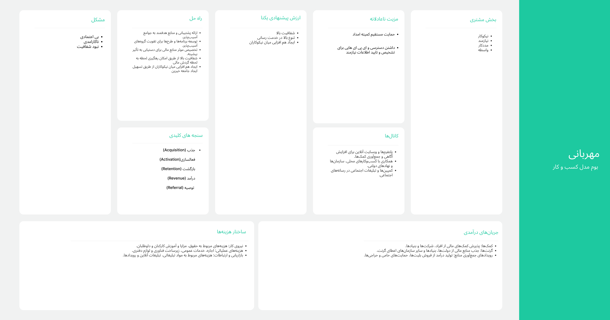
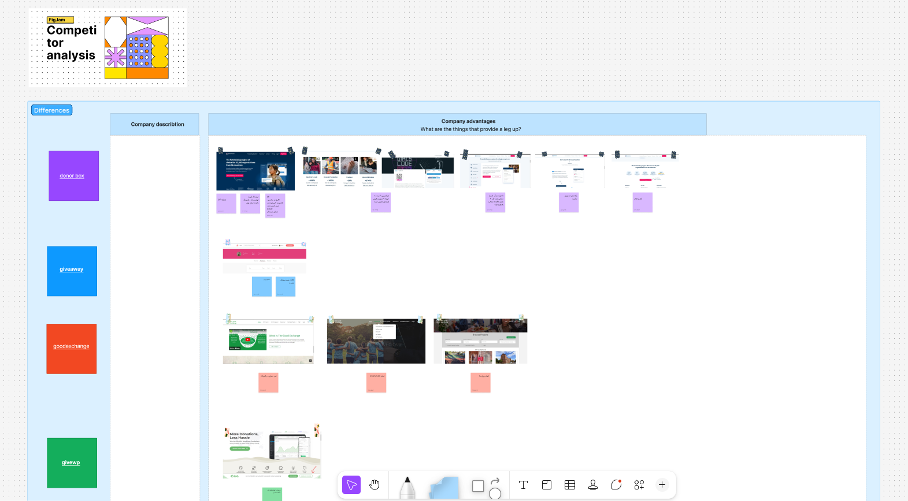
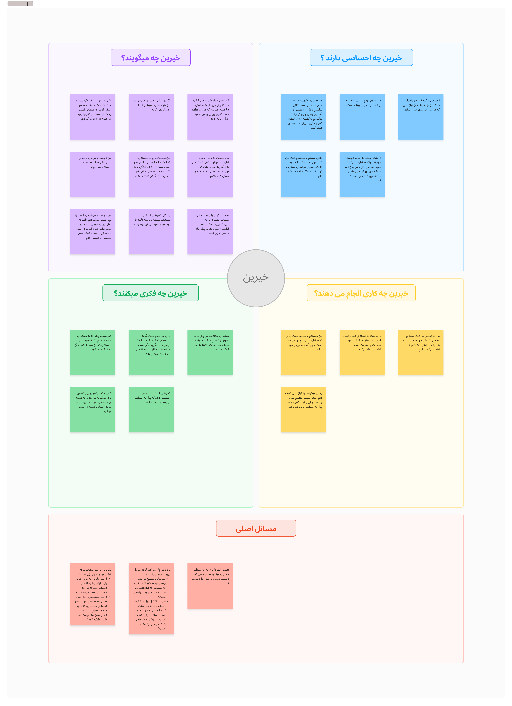
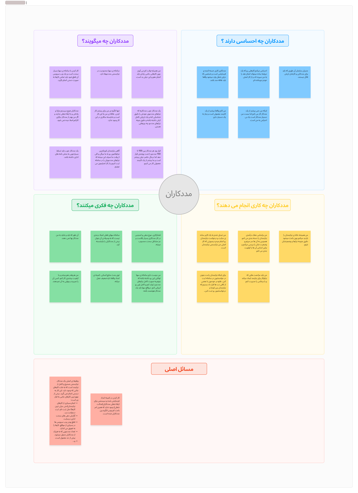
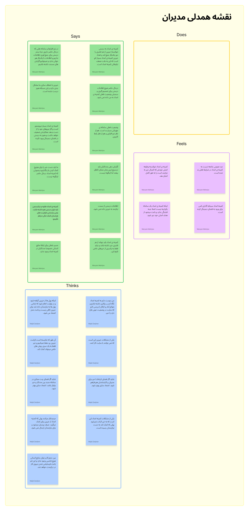
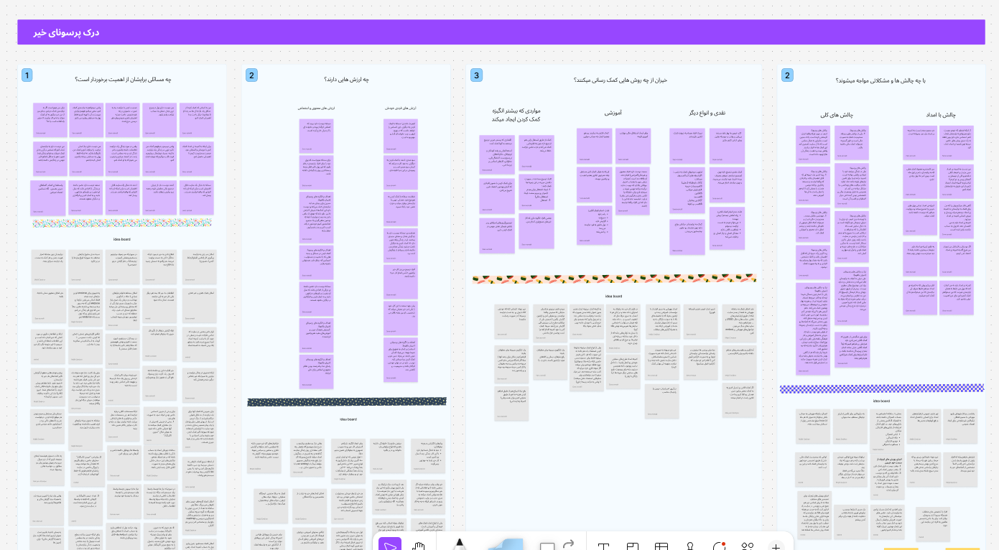
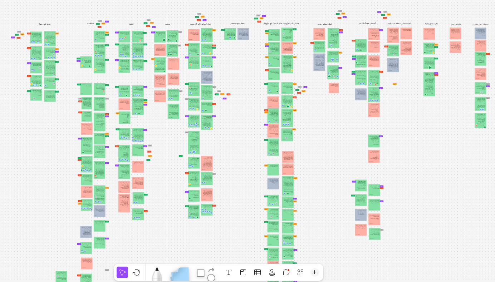
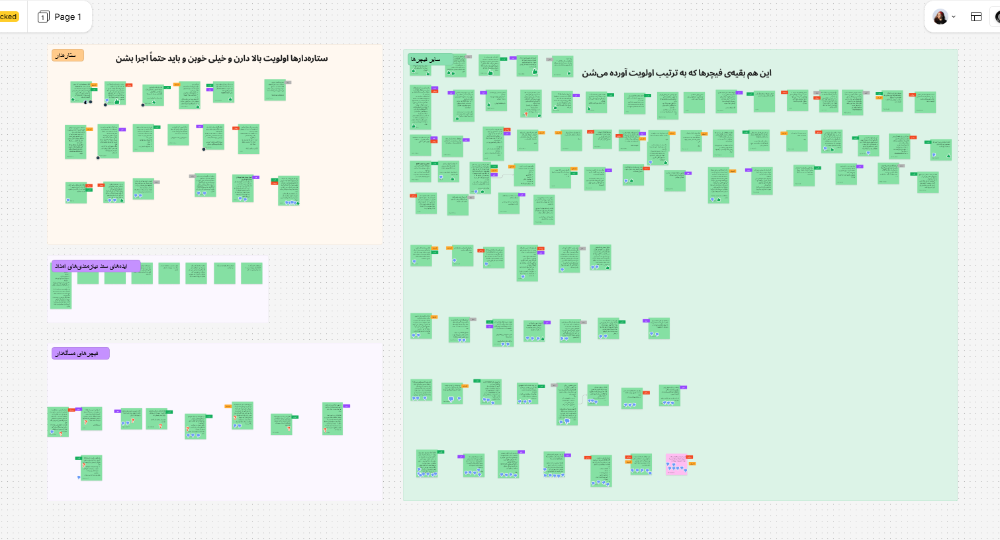
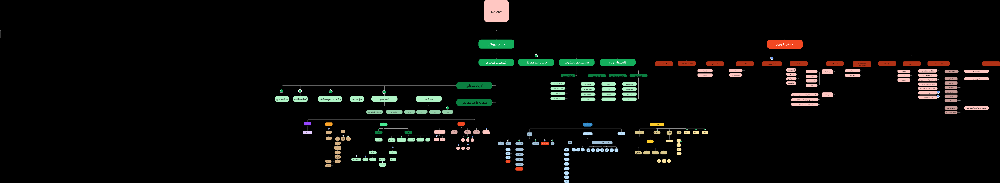
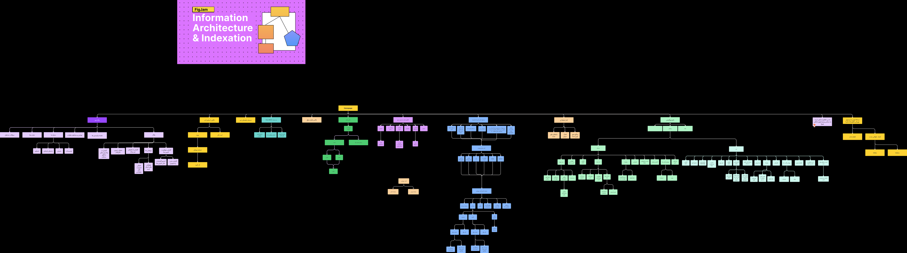

CASE STUDY / 01 · 2023–2025
Mehrabani
Designing clearer, more trustworthy paths for charitable support.

01 / OVERVIEW
A connected service for people giving, receiving, and managing support.
Mehrabani was commissioned by Imam Khomeini Relief Foundation and designed and developed with Aghigh Studio. It brings together aid programs, donors, people in need, and operational teams in one digital charity platform.
- My role
- UX Researcher &
Landing-page Designer - Contribution
- Primary: research, personas, affinity mapping, and feature definition.
Design: the Mehrabani landing page. - Team
- Aghigh Studio
4 people - Scope
- Charity, support programs, credits, logistics, and organizational workflows
02 / THE CHALLENGE
Giving is often shaped by uncertainty.
People need to understand what they are supporting, where their contribution goes, and what happens next. Meanwhile, people receiving support and teams managing credits, products, content, and logistics need practical, connected paths.
03 / RESEARCH PROCESS
From context to a feature set
The process moved from business context and market patterns to participant evidence, personas, prioritised features, and the product structure. It included 16 participants across four primary audience groups, with four people represented in each group.
- 01 Business context
- 02 Competitor analysis
- 03 Interviews
- 04 Personas
- 05 Empathy maps
- 06 Affinity mapping
- 07 Feature priorities
- 08 IA & user flows
01 / BUSINESS CONTEXT
The operating model behind the service
Before defining the experience, we mapped the participants, value exchange, channels, costs, and funding logic that shape a charity platform.

02 / COMPETITOR ANALYSIS
Mapping familiar charity patterns
Comparable services were reviewed to identify common donation patterns, trust signals, campaign structures, and gaps that Mehrabani could address.

03 / PARTICIPANT INTERVIEWS
Four voices for each audience
We spoke with 16 participants across the four primary audiences. Each group was represented by four people, creating a qualitative view of needs, motivations, concerns, and everyday constraints.
- 04
- Donors
- 04
- Beneficiaries
- 04
- Support workers
- 04
- Managers
04 / PERSONAS
Distinct contexts, not a generic user
The persona boards document donor, beneficiary, and manager contexts. The support-worker perspective is carried through the dedicated empathy and affinity maps that follow.


05 / EMPATHY MAPS
Making each perspective visible
Each map captures what a primary audience says, thinks, does, and feels. The donor and support-worker boards below have been updated with the clearer, higher-resolution versions.
Donors

Support workers

Beneficiaries

Managers

06 / AFFINITY MAPPING
Needs were clustered for every persona
We created a dedicated affinity area for each persona, grouping interview notes around motivations, needs, challenges, and contextual constraints before turning them into product decisions.

07 / FEATURE DEFINITION
From tagged observations to a focused backlog
Potential features were tagged and grouped, then scored for priority. This made the path from research evidence to a practical first feature set visible.


Support programs, search, filtering, and clear program information.
Giving paths, donation context, and visible progress signals.
Profiles, credits, content, and operational workflows for the wider service.
08 / PRODUCT STRUCTURE
Information architecture and key user flows
The updated architecture connects discovery, support programs, profiles, and operational spaces. User flows then translate that structure into the concrete paths people take to complete core tasks.


04 / KEY INSIGHTS
Trust is not one feature.
- 01
Trust has to be felt throughout the journey through clear programs, understandable choices, visible next steps, and transparent support information.
- 02
Different audiences need distinct paths, while the service must connect individual support with organizational operations.
- 03
A practical product structure matters when donations, credits, products, and logistics meet in one platform.
05 / DESIGN DIRECTION
From research to a connected service
The research became focused journeys for discovering aid programs, choosing ways to help, managing donations and credits, and supporting organizational workflows.
- Clearer information architecture
- Focused user flows for key tasks
- Reusable UI patterns across responsive screens
- Interactive prototypes to refine the experience
06 / FINAL SOLUTION
An approachable entry point to giving
I designed the Mehrabani landing page to introduce its purpose, explain support programs, and guide people toward meaningful action within the established visual identity.
My contribution focused on research and the landing-page design. The product’s broader visual identity and other product surfaces were created by the wider team.
08 / REFLECTION
Designing for an ecosystem, not a single screen.
Mehrabani strengthened my ability to turn qualitative research into practical product decisions. It showed me how clarity in a small interaction can affect trust across an entire service.